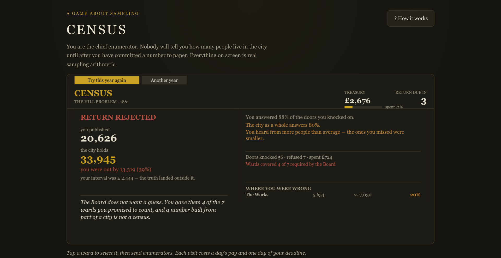

01
CENSUS
A game about sampling, where every number on screen is real arithmetic — and the mistake it teaches is one spreadsheets hide. Un gioco sul campionamento, dove ogni numero a schermo è aritmetica vera — e l'errore che insegna è uno che i fogli di calcolo nascondono.
The problemIl problema
Sampling error is easy to claim and almost never demonstrated. A margin of error covers the luck of the draw; it cannot cover a biased sample. Most people learn that difference the expensive way. L'errore di campionamento è facile da dichiarare e quasi mai dimostrato. Un margine di errore copre la sfortuna del sorteggio; non copre un campione distorto. Quasi tutti imparano la differenza nel modo più caro.
What I builtCosa ho costruito
The rules are the textbook ones, implemented for real: the margin of error is computed over the households that actually answered, a second variance term accounts for non-response, and a clamp floors the estimate so a unanimous sample of ten can never be reported as certain. The estimator is deliberately built without response-rate division, because the alternative hides the bias instead of measuring it. Le regole sono quelle da manuale, implementate davvero: il margine di errore è calcolato sulle famiglie che hanno risposto, un secondo termine di varianza tiene conto della mancata risposta, e un limite inferiore impedisce che un campione unanime di dieci venga riportato come certo. L'estimatore è costruito di proposito senza divisione per il tasso di risposta, perché l'alternativa nasconde il bias invece di misurarlo.
ResultRisultato
The simulation is DOM-free and canvas-free, so the arithmetic is unit-testable outside a browser. A 60-seed test proves a claimed 95% interval covers about 92% of the time when nothing is selective — and only about 75% under selective non-response. That gap is the entire game. La simulazione è senza DOM e senza canvas, quindi l'aritmetica è testabile fuori dal browser. Un test su 60 semi dimostra che un intervallo dichiarato al 95% copre circa il 92% dei casi quando nulla è selettivo — e solo circa il 75% con non-risposta selettiva. Quello scarto è tutto il gioco.
- The constraintIl vincolo
- No server, no accounts, no real census — and a margin of error that has to be computed, not asserted.Nessun server, nessun account, nessun censimento reale — e un margine di errore da calcolare, non da dichiarare.
- StackStack
- Plain ES modules · Canvas 2D · the simulation is DOM-free, so the arithmetic is testable in NodeModuli ES puri · Canvas 2D · la simulazione è senza DOM, così l'aritmetica è testabile in Node
- ShippedPubblicato
- Installable PWA · works offline · a 60-seed test that checks the coverage claimPWA installabile · funziona offline · un test su 60 semi che verifica la copertura dichiarata
What I'd do differently. The interval is right, but the player cannot see why it is the width it is — the variance terms are computed and then hidden. I would show them, because a margin of error you cannot interrogate is a number you have to trust. Cosa farei diversamente. L'intervallo è corretto, ma il giocatore non può vedere perché è largo quanto è — i termini di varianza vengono calcolati e poi nascosti. Li mostrerei, perché un margine di errore che non puoi interrogare è un numero che devi per forza credere.
60-seed coverage test — census-pwa/sim.test.mjs:358
Test di copertura su 60 semi — census-pwa/sim.test.mjs:358
